Oakland Animal Services
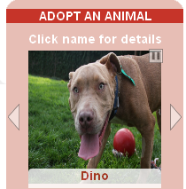
Oakland Animal Services uses the API to customize a scrolling display of adoptable pets from their shelter. It is then shown on their website as well as on the TV in the shelter's lobby!
This guide will take you through Petfinder's API and will teach you how to access its data for your own application. We will begin with some example applications to give you ideas of how the API can be used and why you might want to learn how to use it. By the end of this tutorial, you will understand what the API is, how to set it up, how to send a request, and how to interpret the data you will be receiving. You will soon be on your way to using the Petfinder API for your own application! I will be breaking down each part of the official documentation found on Petfinder's website and will cover it in detail below; but if you would like to take a look at it first, you can find it by clicking the button below.
Official Petfinder API docBefore beginning this tutorial, it is necessary that you have a basic understanding of Javascript, jQuery, and HTML. There are many great online resources if you are unfamiliar with either of those. I would strongly recommend checking some of them out before returning to this API guide.
A few great Javascript tutorials that I would recommend are W3Schools' JS tutorial and Mozilla Developer Network's JS tutorial.
As for HTML tutorials, W3Schools also has a great tutorial, as does Mozilla Developer Network. And finally, here is a great jQuery tutorial also by W3Schools.
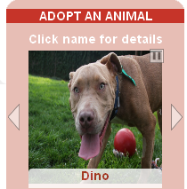
Oakland Animal Services uses the API to customize a scrolling display of adoptable pets from their shelter. It is then shown on their website as well as on the TV in the shelter's lobby!
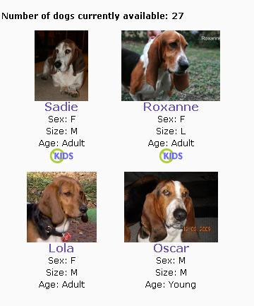
Belly Rubs Basset Rescue uses Petfinder's API to populate the list of available dogs on its website inside of another content management system, Joomla!
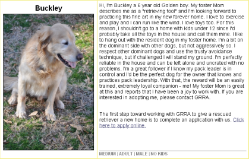
Golden Retriever Rescue of Atlanta uses the API to populate the "available dogs" page on their website. Using the API allows for an automated way for them to publish their information in multiple places.
API stands for Application Programming Interface and it serves as an interface between different programs, allowing them to communicate and interact with each other. Programmers make APIs to give developers access to their data and resources. For a more comprehensive definition, Wikipedia has a great explanation of APIs.
And for visual learners, here is a FANTASTIC animated answer to the question "What is an API?"
Petfinder has over 300,000 adoptable pets and over 11,000 animal welfare organizations in its database. Using its API, developers can access the entire database to display Petfinder's data on their own dynamic websites or applications. Petfinder's API has nine methods that can be used to pull data such as a breed list, shelter records matching your search, pet records matching your search, a single pet record, and so on. There are two methods that I will not be mentioning in this guide: (1) the method auth.getToken for obtaining a token, and (2) the method shelter.get that returns a record for a single shelter and requires the use of a token.
To access any information from Petfinder's database, you must first obtain an API key. An API key is a unique code used to identify the calling program, the developer, or the user. It is passed in by computer programs when an API is called and can track how the API is being used. If the API is being used maliciously or the terms of service are being violated, the user can be tracked down and the license can be revoked. Take a look at Petfinder's API Terms of Service before obtaining your key.
API Terms of ServiceBefore you can obtain a key, you must create an account with Petfinder.com
RegisterGreat! Now that you are logged in, you can request an API key. When you arrive at the page, just fill in the fields, read the terms, check the box that says "I have read and agreed to the terms of service", and click the orange button to request a key!

If you have successfully obtained a key, you will be directed to a page "For Developers" where you can view your API information. Your API Key will be shown along with your API Secret. The secret is used to sign requests that require authentication. We will not be using the secret in this tutorial, but it is there if you need it down the road. The page will look like this:
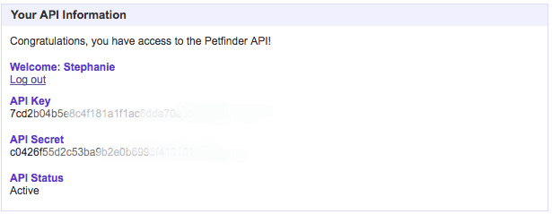
Okay, now for the good stuff! Let's learn how to send a request. The Petfinder API is a RESTful API, meaning it is accessed using standard HTTP request methods. For GET calls, the arguments are specified in a URL query string that will look something like this:
"http://api.petfinder.com/my.method?key=12345&arg1=foo&token=67890&sig=abcdef"
The "token" and "sig" arguments are not needed for most of the methods and will not be needed for any of the examples covered in this guide. However, it is good to know where to append the information should you want to use it later.
Here is some sample code for what a request for Breed List might look like:
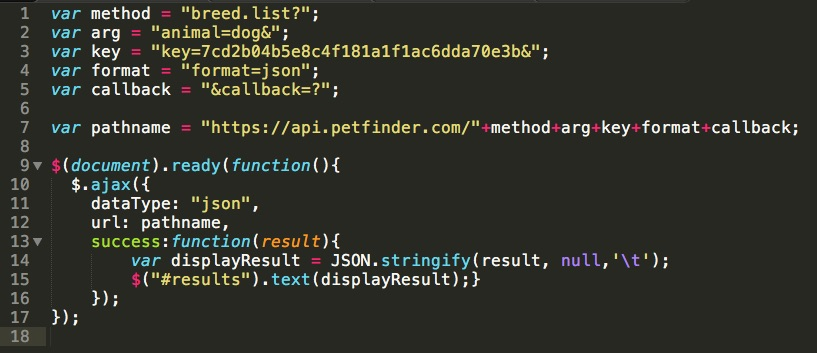
The GET request is sent as a string made up of different components. The complete query looks like this:
https://api.petfinder.com/breed.list?animal=dog&key=7cd2b04c4_your_key_here_a1f1da70e3b&format=json&callback=?
https://api.petfinder.com/ is what is called the "Base URL". Every Petfinder API call begins with that URL. Next, we add on different components.
Line 1: We assign the API method that we want to call to the variable "method". In this example, we are calling the breed.list method.
Line 2: We choose which parameters we wish to supply and assign it to the variable "arg". For some methods, not every argument that it can accept is required. In this example, the type of animal is required, so we use "animal=dog" to indicate that we are interested in the breed list for dogs. It is followed by a "&" because that is what's used to join it to the next parameter we are going to pass in.
Line 3: The next parameter we are passing in is the API key. This is API key that we obtained from Petfinder and we are assigning it the variable "key".
Line 4: The Petfinder API responds in XML by default, but we can -and will!- change the output to JSON by using "format=json".
Line 5: The API supports JSONP for cross-domain requests. In order to denote that this is a JSONP request, we must add the callback parameter. We use callback=? and jQuery will replace the "?" with a unique time-stamped value.
Line 9: Code included in the function will only run once the DOM is fully loaded and ready for the JS code to execute.
Line 10: This method performs an asynchronous AJAX request. It is followed by paramters with at least one name-value pair for the request.
Line 11: This specifies the data type expected of the server response.
Line 12: This specifies the IRL to send the request to.
Line 13: This is the function that will be run when the request succeeds.
Line 14: This converts the object result into a string and assigns it to the variable "displayResult"
Line 15: This finds the HTML element with the tag "results" and displays the string stored in "displayResult" there.
Now that you understand how the request came together, go ahead and click the "Result" tab to see the result:
The result that was returned is an object, so we do not need to parse the data. If we received data in JSON format, we can parse it to convert it into a JavaScript Object. JSON, which stands for JavaScript Object Notation, is based on a subset of the JavaScript language. In the example above, I took the object that was returned and converted it into JSON string using "stringify" so that we can see what the returned data looks like. As you can tell, it is hard to read and not very useful to us yet. There is a handy tool that can be used to format the result into something a little more readable. All you have to do is paste your JSON result into the box on the left, click the "Format/Beautify" button, and you will get something that looks like this:
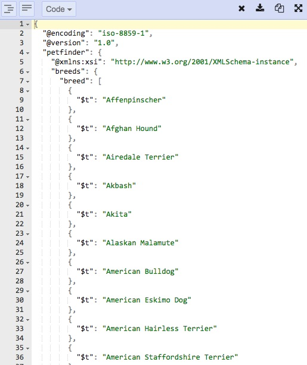However, if you want to display this information on your application, we still have some work to do. Since the data was already returned in an object, we can use dot notation to access and display the data. Here is what the edited code now looks like:
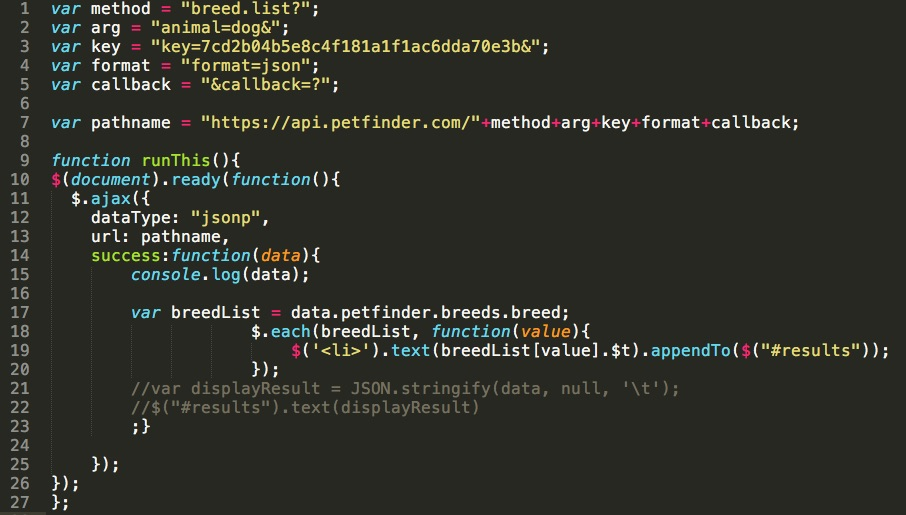Now the breed list is displayed on your webpage in a list!
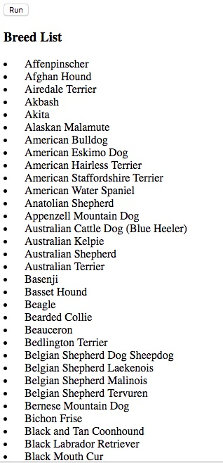
We can take a look at the returned object its data by using the developer tools on the Chrome browser. Click on the "Console" tab and you will see a collapsed tree that looks like this:
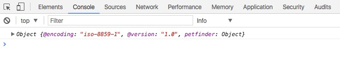
The Object that you see contains many properties. You can see them by expanding the tree. Go ahead and expand the object tree. By clicking on the arrow next to "Object", you will see that it contains another two objects: petfinder and _proto_. Expand the "petfinder" object and you will find three objects: breeds, header, and _proto_. Expand "breeds" and you will find another two objects: breed and _proto_. Click to expand the "breed" object and you will see that it says "breed: Array(294)" This tells us that an array of 294 elements are stored inside this object. By exapnding the first set of arrays, you will see that more objects are stored inside the array! By expanding element [0], you will see that it contains a property called "$t:" which contains the string "Affenspinscher". This is the first dog breed listed in the Breed List. If you continue expanding each object in the array, you will find the strings of the rest of the dog breeds in the list! The tree looks like this when fully expanded:
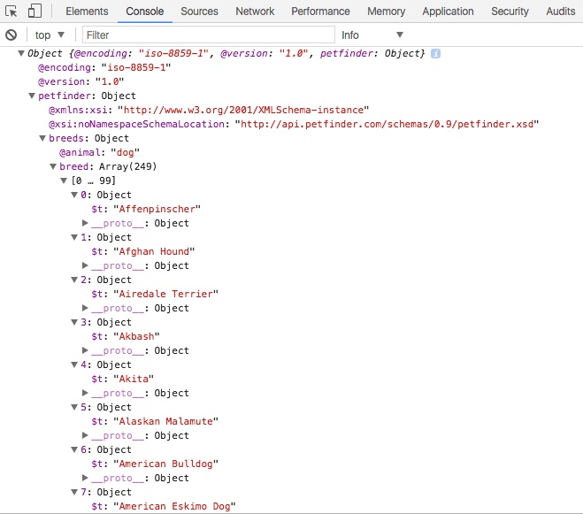
Understanding how to read this tree makes it easy to then use dot notation to access the data. The "breed" object is accessed by going all the way through the tree beginning with the outermost object called "data". It is written (and stored in the variable breedList) like this:
var breedList = data.petfinder.breeds.breed;
Take a look at the code used to display the results in list format:
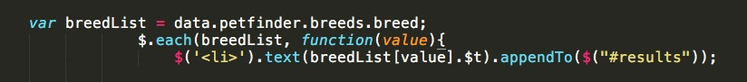
What this snippet of code means is that for each value in the "breed" object, we will display the text string and append it to a list where there is an HTML element with the ID "results". Now that I've broken it all down and you understand how it all comes together, here is the complete code in JSFiddle:
The pet.find method allows a user to search for pets according to the
search criteria they provide. A collection pet records matching the search
will be returned. By default the argument "count" is set to 25, so only a max
of 25 records will be returned unless the number is changed. This method can
accept many parameters as shown in the table below.
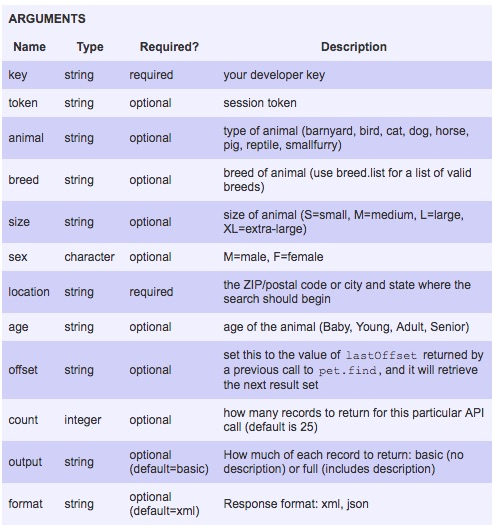
Out of all these arguments, only two are required: the key and the location. I have passed in
a few additional arguments for this example, including animal type and the sex. Now that you
know how to decipher the code, you will see that I used dot notation to access and display the
age, animal type, breed, description, and contact email.
These are all of the APIs in the library. Here are tables, found in Petfinder's API doc,
illustrating the arguments accepted by each method.
This returns a token for a timed session.
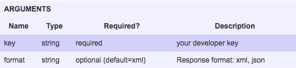
This returns a list of breeds for a particular animal.
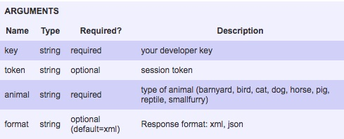
This returns a record for a single pet.
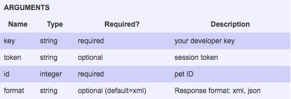
This returns a record for a randomly selected pet.
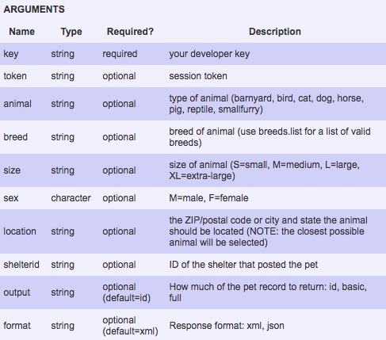
This returns a collection of pet records matching the users search criteria.
This returns a collection of shelter records matchin the search criteria.
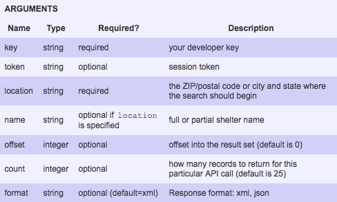
This returns a record for a single shelter.
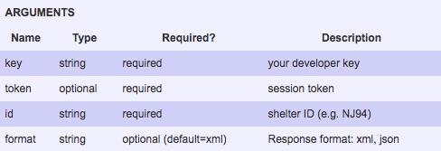
This returns a list of IDs or a collectin of pet records for a shelter.
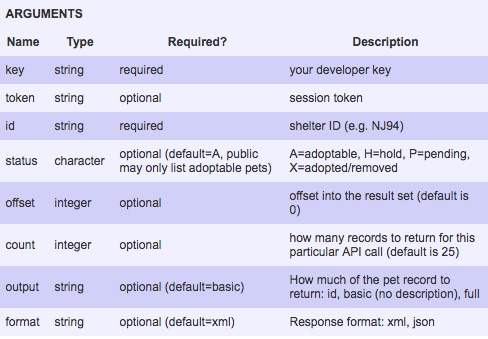
This returns a list of shelter IDs listing animals of a particular breed.
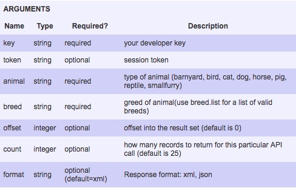